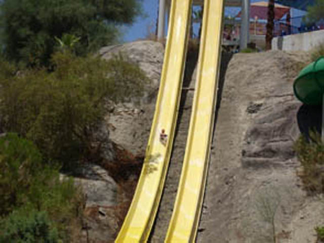

| |

Tidal Wave Tower Photos

We're heading back in time, to when not only was Wet'N'Wild Palm Springs still standing, but it was Soak City Palm Springs. Because today, we'll be reveiwing Tidal Wave Tower. This was the official Drop Slide of Wet'N'Wild Palm Springs. However, the stairs weren't that high, so you just kept climbing. But once you reached the top, you realized that you were much higher than you expected. The upsides of being built on a hill. So you just closed your eyes, and just dropped. The drop was a lot of fun, and was also very cool looking as the bottom of the drop used the terrain quite well. Then, you just ran and got back in line. I'd definetly would've recommend riding this if you're at Wet 'N' Wild Palm Springs. Drop Slides are always a lot of fun.
7/10
Location: Wet 'N' Wild Palm Springs
Opened: I honestly don't know.
Died: 2019
Built by: White Water Slides
Last Ridden: June 26, 2007
Tidal Wave Tower Photos


Home
|